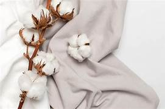

Cotton
Best for: Beginners, general embroidery, and cross-stitch.
is lightweight, breathable, and easy to stitch on. Tightly woven options being ideal for embroidery.

Linen
Best for: Hand embroidery, counted-thread embroidery, and heirloom projects.
Linen has a natural texture and durability that makes it great for detailed embroidery.

EvenWeave
Best for: Detailed embroidery, cross-stitch, and blackwork.
Evenweave fabrics have a consistent thread count, making them perfect for detailed stitching.